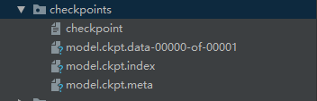
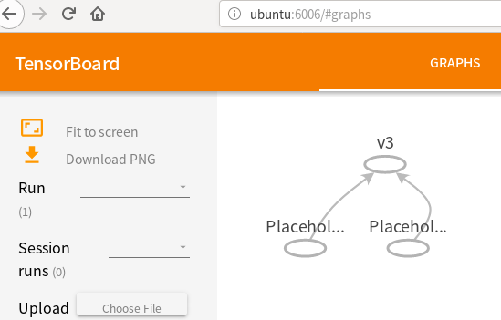

一、模型的保存与恢复
在通过TensorFlow进行深度学习训练时，会产生大量的参数，那么下一次进行训练的时候又得重新进行训练。所以可以将已经训练好的模型保存到本地。等需要的时候直接将模型读入到内存中来。
模型的保存
1
2
3
4
5
6
7
8
9
10
11
12
13
14import tensorflow as tf
v1 = tf.Variable(1, name="v1")
v2 = tf.Variable(2, name="v2")
#定义初始化所有变量op
init_op = tf.initialize_all_variables()
#增加保存模型op
saver = tf.train.Saver()
#开启一个会话
with tf.Session() as sess:
sess.run(init_op)
save_path = saver.save(sess=sess, save_path="/home/liuyan/Desktop/OpenCV/checkpoints/model.ckpt")运行之后就会生成保存的模型：
模型的恢复
模型的恢复需要两步：- 恢复模型的结构（如果自己又重新写了一份静态图，则不需要该步）
- 恢复模型的参数
1
2
3
4
5
6
7
8
9
10
11
12import tensorflow as tf
#恢复模型结构(省略的话如下所示需要自己再重新构建图)
#saver = tf.train.import_meta_graph('/home/liuyan/Desktop/OpenCV/checkpoints/model.ckpt.meta')
v1 = tf.Variable(0, name="v1")
v2 = tf.Variable(0, name="v2")
saver = tf.train.Saver()
#开启会话 with tf.Session() as sess:
saver.restore(sess, '/home/liuyan/Desktop/OpenCV/checkpoints/model.ckpt')
print(sess.run(v1))
选择存储和恢复哪些变量
如果不给tf.train.Saver()传入参数，那么会保存所有的变量，其中每一个变量都以被创建时的名称被保存。1
2#Add ops to save and restore only 'v2' using the name "my_v2"
saver = tf.train.Saver({"my_v2": v2})
二、TensorBoard可视化学习
为了方便对TensorFlow程序的理解、调试与优化，可以使用TensorBoard来展现TensorFlow的静态图、绘制图像生成的定量指标图以及附加数据。相关操作十分简单，具体步骤如下：
将当前的图写入硬盘
1
2
3
4
5
6
7
8
9
10
11
12import tensorflow as tf
v1 = tf.placeholder(dtype=tf.int32)
v2 = tf.placeholder(dtype=tf.int32)
v3 = tf.add(v1, v2, name="v3")
#开启一个会话
with tf.Session() as sess:
print(sess.run(v3, feed_dict={v1: 1, v2: 2}))
#定义一个生成tensorboard图操作，第一个参数是图的存储路径
graph_writer_op = tf.summary.FileWriter('.', sess.graph)
sess.run(graph_writer_op)启动TensorBoard显示
输入下面的指令来启动TensorBoard：1
python tensorflow/tensorboard/tensorboard.py --logdir=path/to/log-directory
这里的参数
logdir指向SummaryWriter序列化数据的存储路径。如果logdir目录的子目录中包含另一次运行时的数据，那么 TensorBoard 会展示所有运行的数据。TensorBoard 开始运行后，可以通过在浏览器中输入localhost:6006来查看 TensorBoard。如果已经通过pip安装了TensorBoard，也可以通过执行以下命令来访问：
1
tensorboard --logdir=/path/to/log-directory

TensorBoard图表可视化
TensorBoard的图表计算强大而又复杂，在可视化和理解网络结构时非常有帮助，，如下所示：
典型的网络结构都有数以千计的节点，那么多的节点难以一下子全部看到，简单起见我们可以为变量名划定范围。下面这个例子使用tf.name_scope在hidden命名域下定义了三个操作：1
2
3
4
5
6import tensorflow as tf
with tf.name_scope('hidden') as scope:
a = tf.constant(5, name='alpha')
W = tf.Variable(tf.random_uniform([1, 2], -1.0, 1.0), name='weights')
b = tf.Variable(tf.zeros([1]), name='biases')通过静态图获取具体tensor
TensorFlow是通过定义静态图来运行的，我们也可以在程序最后获得这张图：1
g = tf.get_default_graph
然后可以进一步从图中获取变量：
1
2var_a = g.get_tensor_by_name(“v1”)
print(sess.run(var_a))